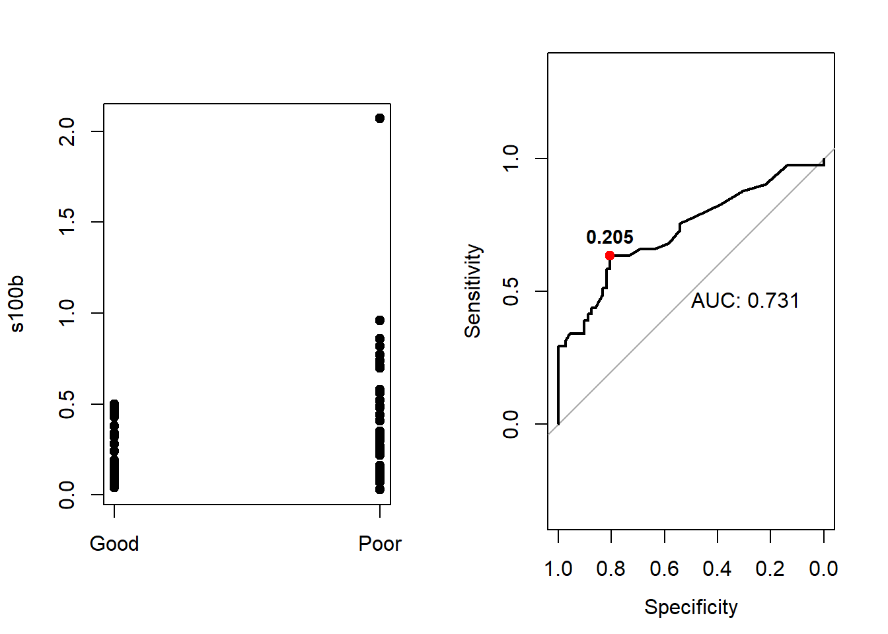

ROC curves
# student
# op_echo=FALSE
# op_eval=FALSE
# teacher
op_echo=TRUE
op_eval=TRUEExercises
Exercise 9.1
The concentration of the s100b-protein was measured in \(n=113\) patients. Additionally, the clinical outcome of patients was classified as either “Good” or “Poor” using a gold standard. Dataset is part of the pROC package.
- Install and load the pROC package. Then load the data set aSAH from pROC. This dataset summarizes clinical and laboratory variables of 113 patients with an aneurysmal subarachnoid hemorrhage.
#install.packages("pROC")
## Load the library
library(pROC)
## Read the data set
data("aSAH", package = "pROC")
str(aSAH)## 'data.frame': 113 obs. of 7 variables:
## $ gos6 : Ord.factor w/ 5 levels "1"<"2"<"3"<"4"<..: 5 5 5 5 1 1 4 1 5 4 ...
## $ outcome: Factor w/ 2 levels "Good","Poor": 1 1 1 1 2 2 1 2 1 1 ...
## $ gender : Factor w/ 2 levels "Male","Female": 2 2 2 2 2 1 1 1 2 2 ...
## $ age : int 42 37 42 27 42 48 57 41 49 75 ...
## $ wfns : Ord.factor w/ 5 levels "1"<"2"<"3"<"4"<..: 1 1 1 1 3 2 5 4 1 2 ...
## $ s100b : num 0.13 0.14 0.1 0.04 0.13 0.1 0.47 0.16 0.18 0.1 ...
## $ ndka : num 3.01 8.54 8.09 10.42 17.4 ...- Perform an ROC analysis using roc function.
roc_s100b = roc(outcome ~ s100b, data = aSAH) #response~predictor
## Setting levels: control = Good, case = Poor
## Setting direction: controls < cases
print(roc_s100b)
##
## Call:
## roc.formula(formula = outcome ~ s100b, data = aSAH)
##
## Data: s100b in 72 controls (outcome Good) < 41 cases (outcome Poor).
## Area under the curve: 0.7314
roc_s100b$sensitivities
## [1] 1.00000000 0.97560976 0.97560976 0.97560976 0.97560976 0.90243902
## [7] 0.87804878 0.82926829 0.78048780 0.75609756 0.73170732 0.68292683
## [13] 0.65853659 0.65853659 0.63414634 0.63414634 0.63414634 0.63414634
## [19] 0.60975610 0.58536585 0.58536585 0.56097561 0.53658537 0.51219512
## [25] 0.51219512 0.48780488 0.46341463 0.43902439 0.43902439 0.41463415
## [31] 0.41463415 0.39024390 0.39024390 0.34146341 0.34146341 0.34146341
## [37] 0.34146341 0.31707317 0.29268293 0.29268293 0.26829268 0.24390244
## [43] 0.21951220 0.19512195 0.14634146 0.12195122 0.09756098 0.07317073
## [49] 0.04878049 0.02439024 0.00000000The function set automatically the direction of the threshold \(t\), namely if direction: < the test is positive if s100b\(\geq t\) otherwise is positive if s100b\(\leq t\).
Using the output of the roc function, print for each threshold value the sensitivity,the specificity, and the Youden index values, namely create a table that contains the four values and print it.
result = data.frame(
'Threshold'= roc_s100b$thresholds,
'Sensitivity'= roc_s100b$sensitivities,
'Specificity'= roc_s100b$specificities,
'Youden'= roc_s100b$sensitivities + roc_s100b$specificities - 1
)
head(result)## Threshold Sensitivity Specificity Youden
## 1 -Inf 1.0000000 0.00000000 0.00000000
## 2 0.035 0.9756098 0.00000000 -0.02439024
## 3 0.045 0.9756098 0.06944444 0.04505420
## 4 0.055 0.9756098 0.11111111 0.08672087
## 5 0.065 0.9756098 0.13888889 0.11449864
## 6 0.075 0.9024390 0.22222222 0.12466125Knowing that Specificity=P(Test negative result|Patient healthy), Sensitivity=P(Test positive| Patient diseased) could you explain the values obtained for \(-\infty\) threshold.
Solution
If the threshold is set to \(-\infty\), than all the patients will be labeled as positive, as s100b will be always bigger than \(-\infty\).
- Knowing that the ROC curve is 1-Specificity vs Sensitivity, plot the ROC curve, and interpret the results. Use the text function to add the AUC value to the plot. Furthermore using the points function mark up with red color the point corresponding to the maximum Youden index value.
par(mfrow=c(1,2))
stripchart(s100b~outcome,data=aSAH,col='black',vertical=TRUE,pch=19)
plot(x = 1 - roc_s100b$specificities,
y = roc_s100b$sensitivities,
type = "l",
xlab = "1 - Specificity",
ylab = "Sensitivity",
ylim = c(0, 1),
xlim = c(0, 1))
lines(x = 0:1, y = 0:1, lty = "dashed")
temp<-length(roc_s100b$specificities)
points(x = 1 - roc_s100b$specificities[seq(2,temp,5)],
y = roc_s100b$sensitivities[seq(2,temp,5)])
text(0.6,0.1,paste('AUC:',round(roc_s100b$auc,2)))
#same result with plot.roc
# plot.roc(roc_s100b)
# Youden index
max_youden<-result[which.max(result$Youden),]
points(x=1-max_youden$Specificity,y=max_youden$Sensitivity,col='red',pch=19)
text(x=1-max_youden$Specificity,y=max_youden$Sensitivity, label=max_youden$Threshold, cex=0.9, font=2,pos=3)
- Besides s100b, the enzyme NDKA was measured. Make again a ROC analysis and draw the ROC curve on top of the existing plot. You can use plot and lines or plot.roc and lines.roc functions.
plot.roc(outcome ~ ndka, data = aSAH, main="ROC comparison", col= "red")
lines.roc(outcome ~ s100b,data=aSAH, col="blue")- Perform a statistical test to see whether s100b or NDKA is a better predictor for the clinical outcome (roc).
roc_ndka = roc(outcome ~ ndka, data = aSAH)
roc_s100b$auc
roc_ndka$auc
roc.test(roc_s100b, roc_ndka)## Area under the curve: 0.7314
## Area under the curve: 0.612
##
## DeLong's test for two correlated ROC curves
##
## data: roc_s100b and roc_ndka
## Z = 1.3908, p-value = 0.1643
## alternative hypothesis: true difference in AUC is not equal to 0
## 95 percent confidence interval:
## -0.04887061 0.28769174
## sample estimates:
## AUC of roc1 AUC of roc2
## 0.7313686 0.6119580